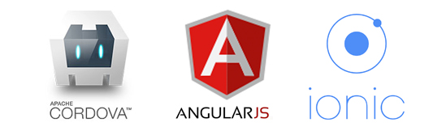
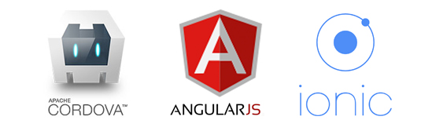

Teste 5
Aplicativo em desenvolvimento, alguns erros poderão ser detectados. Ao utiliza o App está de acordo com os termos, onde qualquer informação salva, poderá ser visualizada por terceiros. Desde já agradecemos a compreensão.
Aplicativo em desenvolvimento, alguns erros poderão ser detectados. Ao utiliza o App está de acordo com os termos, onde qualquer informação salva, poderá ser visualizada por terceiros. Desde já agradecemos a compreensão.
